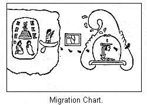

Different views on this question—Reason for the same—Their architecture—Different styles of houses—The communal house—The tecpan—The teocalli—State of society indicated by this architecture—The gens among the Mexicans—The phratry among the Mexicans—The tribe—The powers and duties of the council—The head chiefs of the tribe—The duties of the "Chief-of-men"—The mistake of the Spaniards—The Confederacy—The idea of property among the Mexicans—The ownership of land—Their laws—Enforcement of the laws—Outline of the growth of the Mexicans in power—Their tribute system—How collected—Their system of trade—Slight knowledge of metallurgy—Religion—Quietzalcohuatl—Huitzilopochtli—Mexican priesthood—Human sacrifices—The system of Numeration—The calendar system—The calendar stone—Picture writing—Landa alphabet—Historical outline.
LANDSCAPE presents varied aspects according to the standpoint from which it is viewed. Here we have a glimpse of hill and dale; there a stretch of running water. But two persons, standing in the same position, owing to their different mental temperaments, will view things in a different light. Where one, an artist born, is carried away with the beautiful scenery, another, with a more practical turn of mind, perceives only its adaptability for investments. Education and habits of life are also very potent factors in determining our views on various questions. Scholars of wide and extended learning differ very greatly in their views of questions deeply affecting human interests. We know how true that is of abstruse topics, such as religion and questions of state polity. It is also true of the entire field of scientific research. The unknown is a vastly greater domain than the known, and men, after deep and patient research, adopt widely different theories to explain the same facts.
It need, therefore, occasion no surprise to learn that there is a great difference of opinion as to the real state of culture among the so-called civilized tribes of Mexico and Central America. We have incidentally mentioned this difference in describing the ruins and their probable purpose. As one of the objects we have in view, and perhaps the most important one, is to learn what we can of the real state of society amongst the prehistoric people we treat of, it becomes necessary to examine these different views, and, if we can not decide in our own minds what to accept as true, we will be prepared to receive additional evidence that scholars are now bringing forward, and know to how weigh them and compare them with others.
It has only been within the last few years that we have gained an insight into the peculiar organization of Indian society. After some centuries of contact between the various tribes of Indians and whites, their social organization was still unknown. But we are now beginning to understand this, and the important discovery has also been made that this same system of government was very widely spread, indeed. This subject has, however, been as extensively treated as is necessary in chapter xii, so we need not stop longer. But if, with all the light of modern learning, we have only lately gained a clear understanding of the social organization of Indian tribes, it need occasion no surprise, nor call for any indignant denial, to affirm that the Spaniards totally misunderstood the social organization of the tribes with which they came in contact in Mexico.
We must also take into consideration the political condition of Europe at this time. Feudalism still exercised an influence on men's minds. The Spanish writers, in order to convey to Europeans a knowledge of the country and its inhabitants, applied European names and phrases to American Indian (advanced though they were) personages and institutions. But the means employed totally defeated the object sought. Instead of imparting a clear idea, a very erroneous one was conveyed.
As an illustration of this abuse of language, we might refer to the case of Montezuma, which name itself is a corruption of the Mexican word "Motecu-zoma," meaning literally "my wrathy chief." Mr. Bandelier2 and Mr. Morgan have quite clearly shown what his real position was. His title was "chief of men."3 He was simply one of the two chief executive officers of the tribe and general of the forces of the confederacy. His office was strictly elective, and he could be deposed for misdemeanor. Instead of giving him his proper title, and explaining its meaning, the Spaniards bestowed on him the title of king, which was soon enlarged to that of emperor, European words, it will be observed, which convey an altogether wrong idea of Mexican society. Many such illustrations could be given.
The literature that has grown up about this subject is very voluminous, but the authors not being acquainted with the organization of Indian society, have not been able to write understandingly about them. We do not flatter ourselves that we have now solved all the difficulties of the case. But since Mr. Morgan has succeeded in throwing such a flood of light on the constitution of ancient society, and especially of Indian society, and Mr. Bandelier has given us the results of his careful investigation of the culture of the Mexicans, we feel that a foundation has been laid for a correct understanding of this vexed problem.
We will now examine their architecture, or style of building. In dealing with prehistoric people, we have several times referred to the tribal state of government, involving village life and communism in living. We have seen how this principle enabled us to understand the condition of Europe during the Neolithic Age. In still another place we have used this principle to show the connection of the Pueblo Indians and other tribes of the United States. Now we think this is the key which is to explain many of the ruins we have described in the preceding chapter. But another principle to be borne in mind, is that of defense. War, we have seen, is really the normal state of things amongst tribal communities. Therefore, either some position naturally strong must be selected as a village site, or the houses themselves must be fortified, after the fashion of Indians. This will be found to explain many peculiarities in their method of construction.
Amongst the pueblo structures of to-day, and among the ruins of the cliff-dwellers, we have seen how compact every thing was. The estufa, or place of council and worship, was built in close proximity to the other building, and sometimes it formed part of it, and we do not learn that there was any thing distinguishing about the apartments of the chief. Further South a change is noticed. A specialization of structures, if we may use such an expression, has taken place, and, among the Mexicans, three kinds of houses were distinguished. It is extremely probable the same classification could be made elsewhere. There was, first of all, the ordinary dwelling houses. Every vestige of aboriginal buildings in the pueblos of Mexico has long since disappeared, and our knowledge of these structures can only be gathered from the somewhat confused accounts of the early writers.
Many, perhaps most, of the houses had a terraced, pyramidal foundation. Some were constructed on three sides of a court, like those on the Rio Chaco, in New Mexico. Others probably surrounded an open court, or quadrangle. The houses were of one and two stories in height. When two stories, the upper one receded from the first, probably in the terraced form. As serving to connect them with the more ornamental structures in Yucatan, we are told they were sometimes "adorned with elegant cornices and stucco designs of flowers and animals, which were often painted with brilliant colors. Prominent among these figures was the coiling serpent."4 After pointing out, by many citations, that the evidence always was that these houses were occupied by many families, Mr. Morgan concludes, "They were evidently joint tenement-houses of the aboriginal American model, each occupied by a number of families ranging from five and ten to one hundred, and perhaps, in some cases, two hundred families in a house."5
We can discern this kind of dwelling-house in many of the descriptions we have given of the ruins in the preceding chapter. M. Charney evidently found them at Tulla and Teotihuacan. Mr. Bandelier concludes that similar ruins once crowded the terraces at Cholula, and that to this class belongs the ruins at Mitla. The Palace, at Palenque, is evidently but another instance, as well as the House of Nuns, at Uxmal. In fact, with our present knowledge of the pueblos of Arizona, and the purposes which they subserved, as well as the uses made of such houses by the Mexicans, we are no longer justified in bestowing upon the structures in Yucatan the name of palaces.
The mistake was excusable among the Spaniards. They were totally ignorant of the mode of life indicated by these joint tenement-houses. When they found one of these large structures, capable of accommodating several hundred occupants, with its inner court, terraced foundation, and ornamented by stucco work, or sculpture, it was extremely natural that they should call it a palace, and cast about for some titled owner.
A second class of houses includes public buildings. The Mexicans, when at the height of their power, required buildings for public use, and this was doubtless true of the people who inhabited Uxmal and Palenque. The most important house was the tecpan, the official house of the tribe, the council house proper. This was the official residence of the "chief of men" and his assistants, such as runners. This was the place of meeting of the council of chiefs. It was here that the hospitality of the Pueblo was exercised. Official visitors from other tribes and traders from a distance were provided with accommodations here. When Cortez and his followers entered Mexico they were provided for at the tecpan. We would not expect to find these public buildings, except in rich and prosperous pueblos. It has been suggested that the Governor's House at Uxmal was the official house of that settlement. The large halls, suitable for council purposes, favor this idea.6
A third class of buildings was the teocalli, or "House of God"—in other words, the temple. These were quite common. Each of the gens that composed the Mexican tribe had its own particular medicine lodge or temple. This was doubtless true of each and every tribe of sedentary Indians in the territory we are describing. "The larger temples were usually built upon pyramidal parallelograms, square or oblong, and consisted of a series of superimposed terraces with perpendicular or sloping sides."7 It is not necessary to dwell longer on this style of buildings. We have only to recall the temples of the Sun, of the Cross, and of the Beau-relief at Palenque; the House of the Dwarf at Uxmal, and the Citadel at Chichen-Itza, to gather a clear idea of their construction.
The architecture of a people is a very good exponent of their culture. Yet all have seen what different views are held as to the culture of the tribes we are considering. We have, perhaps, said all that is required on this part of the subject, yet even repetition is pardonable if it enables us to more clearly understand our subject. The ornamentation on the ruins of Yucatan is so peculiar that in our opinion it has unduly influenced the judgment of explorers in this matter. They lose sight of the fact that the apartments of the houses are small, dark, and illy ventilated.
That they should hive gone to the trouble of so profusely decorating their usual places of abode is, indeed, somewhat singular.8 But Mitla was certainly an inhabited pueblo at the time of the Spanish conquest, and there is no good reason for concluding it was ever any thing more than a group of communal buildings. Yet, from the description given of it, we can not see that the buildings are greatly inferior in decoration to the structures in Yucatan. And yet again, from the imperfect accounts we have of the aboriginal structures in the pueblo of Mexico, we infer they were constructed on the general plan of communal buildings. As for the decorations, we have seen they had sometimes elaborate cornices, and were covered with stucco designs of animals and flowers. In this case some of them were, to be sure, public buildings for tribal purposes, but the majority of them were certainly communal residences. With these facts before us, we can not do otherwise than conclude that these so-called ruins of great cities we have described are simply the ruins of pueblos, consisting of communal houses, temples, and, in the case of large and powerful tribes, official houses. To this conclusion we believe American scholars are tending more and more.
This requires us to dismiss the idea that the majority of the people lived in houses of a poorer construction, which have since disappeared, leaving the ruins of the houses of the nobles. There was no such class division of the people as this would signify. These ruins were houses occupied by the people in common. With this understanding, a questioning of the ruins can not fail to give us some useful hints. We are struck with their ingenuity as builders. They made use of the best material at hand. In Arizona the dry climate permits of the use of adobe bricks, which were employed, though stone was also used. Further south the pouring tropical rains would soon bring down in ruins adobe structures and so stone alone is used.
In the Arizona pueblo we have a great fortress-built house, three and four stories high, and no mode of access to the lower story. This is in strict accord with Indian principles of defense, which consists in elevated positions. Sometimes this elevated position was a natural hill, as at Quemada, Tezcocingo, and Xochicalco. Where no hill was at hand they formed a terraced pyramidal foundation, as at Copan, Palenque, and Uxmal. In the highest forms of this architecture this elevation is faced with stone, or even composed throughout of stone, as in the case of the House of Nuns at Chichen-Itza. In the construction of houses progress seems to have taken place in two directions. The rooms increased in size. In some of the oldest pueblo structures in Arizona the rooms were more like a cluster of cells than any thing else.9
They grow larger towards the South. In the house at Teotihuacan M. Charney found a room twenty-seven feet wide by forty-one feet long. Two of the rooms in the Governor's House at Uxmal are sixty feet long. But the buildings themselves diminish in size. In Mexico the majority of the houses were but one story high, and but very few more than two stories. In Yucatan but few instances are recorded of houses two stories high. We must remember that throughout the entire territory we are considering the tribes had no domestic animals, their agriculture was in a rude state, and they were practically destitute of metals.10 They could have been no farther advanced on the road to civilization than were the various tribes of Europe during the Bronze Age. Remembering this, we can not fail to be impressed with the ingenuity, patient toil, and artistic taste they displayed in the construction and decoration of their edifices.
It may seem somewhat singular that we should treat of their architecture before we do of their system of government, but we were already acquainted with the ruins of the former. When we turn to the latter we find ourselves involved in very great difficulties. The description given of Mexican society by the majority of writers on these topics represent it as that of a powerful monarchy. The historian Prescott, in his charming work11 draws a picture that would not suffer by comparison with the despotic magnificence of Oriental lands. At a later date Mr. Bancroft, supporting himself by an appeal to a formidable list of authorities, regilds the scene.12 But protests against such views are not wanting. Robertson, in his history, though bowing to the weight of authority can not forbear expressing his conviction that there had been some exaggeration in the splendid description of their government and manners.13 Wilson, more skeptical, and bolder, utterly repudiates the old accounts, and refuses to believe the Aztecs were any thing more than savages.14
With such divergent and conflicting views, we at once perceive the necessity of carefully scanning all the accounts given, and make them conform, if possible, to what is known of Indian institutions and manners. The Mexicans are but one of several tribes that are the subjects of our research; but their institutions are better known than the others, and, in a general way, whatever is true of them will be true of the rest. We have seen the efforts of the Spanish explorers to explain whatever they found new or strange in America by Spanish words, and the results of such procedure. We are at full liberty to reject their conclusions and start anew.
What the Spaniards found around the lakes of Mexico was a union or confederacy of three tribes. Very late investigations by Mr. Bandelier have established the presence of the usual subdivisions of the tribes. So we have here a complete organization according to the terms of ancient society: that is, the gens, phratry, tribe, and confederacy of tribes. It is necessary that we spend some time with each of these subdivisions before we can understand the condition of society among the Mexicans, and, in all probability, the society among all of the civilized nations of Central America.
We will begin with the gens, or the lowest division of the tribe. We must understand its organization before we can understand that of a tribe, and we must master the tribal organization before attempting to learn the workings of the confederacy. To neglect this order, and commence at the top of the series, is to make the same mistake that the older writers did in their studies into this culture. A gens has certain rights, duties, and privileges which belong to the whole gens, and we will consider some of the more important in their proper place. We must understand by a gens a collection of persons who are considered to be all related to each other. An Indian could not, of his own will, transfer himself from one gens to another. He remained a member of the gens into which he was born. He might, by a formal act of adoption, become a member of another gens; or he might, in certain contingencies, lose his connection with a gens and become an outcast. There is no such thing as privileged classes in a gens. All its members stand on an equal footing. The council of the gens is the supreme ruling power in the gens. Among some of the northern tribes, all the members in the gens, both male and female, had a voice in this council. In the Mexican gens, the council itself was more restricted. The old men, medicine men, and distinguished men met in council—but even here, on important occasions, the whole gens met in council.
Each gens would, of course, elect its own officers. They could remove them from office as well, whenever occasion required. The Mexican gentes elected two officers. One of these corresponded to the sachem among northern tribes. His residence was the official house of the gens. He had in charge the stores of the gens; and, in unimportant cases, he exercised the powers of a judge. The other officer was the war-chief. In times of war he commanded the forces of the gens. In times of peace he was, so to speak, the sheriff of the gens.
The next division of the tribe was the phratry—the word properly meaning a brotherhood. Referring to the outline below, we notice that the eight gentes were reunited into two phratries. Mr. Morgan tells us that the probable origin of phratries was from the subdivision of an original gens. Thus a tradition of the Seneca Indians affirms that the Bear and the Deer gentes were the original gentes of that tribe.15 In process of time they split up into eight gentes, which would each have all the rights and duties of an original gens—but, for certain purposes, they were still organized into two divisions.
| TRIBE. | First Phratry, or Brotherhood. |
Bear Wolf Beaver Turtle |
Gens. |
| Second Phratry, or Brotherhood. |
Deer Snipe Heron Hawk |
Gens. |
Each of these larger groups is called a phratry. All of the Iroquois tribes were organized into phratries, and the same was, doubtless, true of the majority of the tribes of North America. The researches of Mr. Bandelier have quite conclusively established the fact, that the ancient Mexican tribe consisted of twenty gentes reunited as four phratries, which constituted the four quarters of the Pueblo of Mexico.
It is somewhat difficult to understand just what the rights and duties of a phratry were. This division does not exist in all tribes. But, as it was present among the Mexicans, we must learn what we can of its powers. Among the Iroquois the phratry was apparent chiefly in religious matters, and in social games. They did not elect any war-chief. The Mexican phratry was largely concerned with military matters. The forces of each phratry went out to war as separate divisions. They had their own costumes and banners. The four phratries chose each their war-chief, who commanded their forces in the field, and who, as commander, was the superior of the war-chiefs of the gentes.
In time of peace, they acted as the executors of tribal justice. They belonged to the highest grade of war-chiefs in Mexico—but there was nothing hereditary about their offices. They were strictly elective, and could be deposed for cause. They were in no case appointed by a higher authority. One of these chiefs was always elected to fill the office of "Chief of Men;"16 and, in cases of emergency, they could take his place—but this would be only a temporary arrangement.
Ascending the scale, the next term of the series is the tribe. The Spanish writers took notice of a tribe, but failed to notice the gens and phratry. This is not to be considered a singular thing. The Iroquois were under the observation of our own people two hundred years before the discovery was made in reference to them. "The existence among them of clans, named after animals, was pointed out at an early day, but without suspecting that it was the unit of a social system upon which both the tribe and the confederacy rested."17 But, being ignorant of this fact, it is not singular that they made serious mistakes in their description of the government.
We now know that the Mexican tribe was composed of an association of twenty gentes, that each of these gens was an independent unit, and that all of its members stood on an equal footing. This, at the outset, does away with the idea of a monarchy. Each gens would, of course, have an equal share in the government. This was effected by means of a council composed of delegates from each gens. There is no doubt whatever of the existence of this council among the Mexicans. "Every tribe in Mexico and Central America, beyond a reasonable doubt, had its council of chiefs. It was the governing body of the tribe, and a constant phenomenon in all parts of aboriginal America."18 The Spanish writers knew of the existence of this council, but mistook its function. They generally treat of it as an advisory board of ministers appointed by the "king."
Each of the Mexican gens was represented in this council by a "Speaking Chief," who, of course was elected by the gens he represented. All tribal matters were under the control of this council. Questions of peace and war, and the distribution of tribute, were decided by the council. They also had judicial duties to perform. Disputes between different gentes were adjusted by them. They also would have jurisdiction of all crimes committed by those unfortunate individuals who were not members of any gens, and of crimes committed on territory not belonging to any gens, such as the Teocalli, Market-place, and Tecpan.
The council must have regular stated times of meeting; they could be called together at any time. At the time of Cortez's visits they met daily. This council was, of course, supreme in all questions coming before it; but every eighty days there was a council extraordinary. This included the members of the council proper, the war-chiefs of the four phratries, the war-chiefs of the gentes, and the leading medicine men. Any important cause could be reserved for this meeting, or, if agreed upon, a reconsideration of a cause could be had. We must understand that the tribal council could not interfere in any matter referring solely to a gens; that would be settled by the gens itself.
The important points to be noticed are, that it was an elective body, representing independent groups, and that it had supreme authority. But the tribes needed officers to execute the decrees of the council. Speaking of the Northern tribes, Mr. Morgan says, "In some Indian tribes, one of the sachems was recognized as its head chief; and so superior in rank to his associates. A need existed, to some extent for an official head of the tribe, to represent it when the council was not in session. But the duties and powers of the office were slight. Although the council was superior in authority, it was rarely in session, and questions might arise demanding the provisional action of some one authorized to represent the tribe, subject to the ratification of his acts by the council."19
This need was still more urgent among the Mexicans; accordingly we find they elected two officials for this purpose. It seems this habit of electing two chief executives was quite a common one among the tribes of Mexico and Central America. We have already noticed that the Mexican gentes elected two such officers for their purpose. We are further told that the Iroquois appointed two head war-chiefs to command the forces of the confederacy.20
One of the chiefs so elected by the Mexicans bore the somewhat singular title of "Snake-woman." He was properly the head-chief of the Mexicans. He was chairman of the council and announced its decrees. He was responsible to the council for the tribute received, as far as it was applied to tribal requirements, and for a faithful distribution of the remainder among the gentes. When the forces of the confederacy went out to war, he commanded the tribal forces of Mexico; but on other occasions this duty was fulfilled by his colleague, who was the real war-chief of the Mexicans. His title was "Chief-of-men." This is the official who appears in history as the "King of Mexico," sometimes, even, as "Emperor of Anahuac." The fact is, he was one of two equal chiefs; he held an elective office, and was subordinate to the council.
When the confederacy was formed, the command of its forces was given to the war-chief of the Mexicans; thus he was something more than a tribal officer. His residence was the official house of the tribe. "He was to be present day and night at this abode, which was the center wherein converged the threads of information brought by traders, gatherers of tribute, scouts and spies, as well as all messages sent to, or received from, neighboring friendly or hostile tribes. Every such message came directly to the 'Chief-of-men,' whose duty it was, before acting, to present its import to the 'Snake-woman,' and, through him, call together the council." He might be present at the council, but his presence was not required, nor did his vote weigh any more than any other member of the council, only, of course, from the position he occupied, his opinion would be much respected. He provided for the execution of the council's conclusions. In case of warp he would call out the forces of the confederacy for assistance. As the procurement of substance by means of tribute was one of the great objects of the confederacy, the gathering of it was placed under the control of the war-chief, who was therefore the official head of the tribute-gatherers.
We have thus very imperfectly and hastily sketched the governmental organization of the Mexican tribe. It is something very different from an empire. It was a democratic organization. There was not an officer in it but what held his office by election. This, to some, may seem improbable, because the Spaniards have described a different state of things. We have already mentioned one reason why they should do so—that was their ignorance of Indian institutions. We must also consider the natural bias of their minds. The rule of Charles the V was any thing but liberal. It was a part of their education to believe that a monarchical form of government was just the thing; they were accordingly prepared to see monarchical institutions, whether they existed or not.
Then there was the perfectly natural disposition to exaggerate their achievements. To spread in Europe the report that they had subverted a powerfully organized monarchy, having an emperor, a full line of nobles, orders of chivalry, and a standing army, certainly sounded much better than the plain statement that they had succeeded in disjointing a loosely connected confederacy, captured and put to death the head war chief of the principal tribe, and destroyed the communal buildings of their pueblo.
We must not forget that, from an Indian point of view, the confederacy was composed of rich and powerful tribes. This is especially true of the Mexicans. The position they held, from a defensive standpoint, was one of the strongest ever held by Indians. They received a large amount of tribute from subject tribes, along with the hearty hatred of the same. From the time Cortez landed on the shore he had heard accounts of the wealth, power, and cruelty of the Mexicans. When he arrived before Mexico the "Chief-of-men," Montezuma, as representative of tribal hospitality, went forth to meet him, extending "unusual courtesies to unusual, mysterious, and therefore dreaded, guests." We may well imagine that he was decked out in all the finery his office could raise, and that he put on as much style and "court etiquette" as their knowledge and manner of life would stand.
The Spaniards immediately concluded that he was king, and so he was given undue prominence. They subsequently learned of the council, and recognized the fact that it was really the supreme power. They learned of the office of "Snake-woman," and acknowledged that his power was equal to that of the "Chief-of-men." They even had some ideas of phratries and gentes. But, having once made up their minds that this was a monarchy, and Montezuma the monarch, they were loath to change their views, or, rather, they tried to explain all on this supposition, and the result is the confused and contradictory accounts given of these officials and divisions of the people. But every thing tending to add glory to the "Empire of Montezuma" was caught up and dilated upon. And so have come down to us the commonly accepted ideas of the government of the ancient Mexicans.
That these views are altogether erroneous is no longer doubted by some of the very best American scholars. The organization set forth in this chapter is one not only in accord with the results obtained by the latest research in the field of ancient society, but a careful reading of the accounts of the Spanish writers leads to the same conclusions.21 In view of these now admitted facts, it seems to us useless to longer speak of the government of the Mexicans as that of an empire.
We have as yet said nothing of the league or confederacy of the three tribes of Mexico, Tezcuco, and Tlacopan; nor is it necessary to dwell at any great length on this confederacy now. They were perfectly independent of each other as regards tribal affairs; and for the purpose of government, were organized in exactly the same way as were the Mexicans. The stories told of the glories, the riches, and power of the kings of Tezcuco, if any thing, outrank those of Mexico. We may dismiss them as utterly unreliable. Tribal organization resting on phratries and gentes, and the consequent government by the council of the tribe was all the Spaniards found. These three tribes, speaking dialects of the same stock language, inhabiting contiguous territory, formed a league for offensive and defensive purposes. The commander-in-chief of the forces raised for this purpose was the "Chief-of-men" of the Mexicans.
We have confined our researches to the Mexicans. Mr. Bandelier, speaking of the tribes of Mexico, remarks: "There is no need of proving the fact that the several tribes of the valley had identical customs, and that their institutions had reached about the same degree of development." Or if such proofs were needed, Mr. Bancroft has furnished them. So that this state of society being proven among the Mexicans, it may be considered as established among the Nahua tribes. Neither is there any necessity of showing that substantially the same state of government existed among the Mayas of Yucatan. This is shown by their architecture, by their early traditions, and by many statements in the writings of the early historians. These can only be understood and explained by supposing the same social organization existed among them as among the Mexicans.
But this does not relegate these civilized nations to savagism. On the other hand, it is exactly the form of government we would expect to find among them. They were not further along than the Middle Status of barbarism. They were slowly advancing on the road that leads to civilization, and their form of government was one exactly suited to their needs, and one in keeping with their state of architecture. When we gaze at the ruins of their material structures, we must consider that before us are not the only ruins wrought by the Spaniards; the native institutions were doomed as well. Traces of this early state of society are, however, still recoverable, and we must study them well to learn their secret.
We have yet before us a large field to investigate; that is, the advance made in the arts of living among these people. This is one of the principal objects of our present research. We are here slightly departing from the prehistoric field, and entering the domain of history. But the departure is justifiable, as it serves to light up an extensive field, that is, the manner of life among the civilized nations just before the coming of the Spaniards. And first we will examine their customs in regard to property. We have in a former chapter reverted to the influence of commerce and trade in advancing culture. The desire for wealth and property which is such a controlling power to-day was one of the most efficient agents in advancing man from savagism to civilization. The idea of property, which scarcely had an existence during that period of savagism, had grown stronger with every advance in culture. "Beginning in feebleness, it has ended in becoming the master passion of the human mind."
The property of savages is limited to a few articles of personal use; consequently, their ideas as to its value, and the principles of inheritance, are feeble. They can scarcely be said to have any idea as to property in lands, though the tribe may lay claim to certain hunting-grounds as their own. As soon as the organization of gens arose, we can see that it would affect their ideas of property. The gens, we must remember, was the unit of their social organization.
They had common rights, duties, and privileges, as well as common supplies; and hence the idea arose that the property of the members of a gens belonged to the gens. At the death of an individual, his personal property would be divided among the remaining members of the gens. "Practically," says Mr. Morgan, "they were appropriated by the nearest of kin; but the principle was general that the property should remain in the gens."22 That this is a true statement there is not the shadow of a doubt. This was the general rule of inheritance among the Indian tribes of North America. As time passed on, and the tribes learned to cultivate the land, some idea of real property would arise—but not of personal ownership.
This is quite an important topic; because, when we read of lords with great estates, we are puzzled to know how to reconcile such statements with what we now know of the nature of Mexican tribal organization. Mr. Bandelier has lately gone over the entire subject. He finds that the territory on which the Mexicans originally settled was a marshy expanse of land which the surrounding tribes did not value enough to claim.
This territory was divided among the four gentes of the tribe. As we have already seen, each of these four gentes subsequently split up into other independent gentes until there were twenty in all. Each of these gens held and possessed a portion of the original soil. This division of the soil must have been made by tacit consent. The tribe claimed no ownership of these tracts, still less did the head-chief. Furthermore, the only right the gentes claimed in them was a possessory one. "They had no idea of sale or barter, or conveyance, or alienation." As the members of a gens stood on equal footing, this tract would be still further divided for individual use. This division would be made by the council of the gens. But we must notice the individual acquired no other right to this tract of land than a right to cultivate it—which right, if he failed to improve, he lost. He could, however, have some one else to till it for him. The son could inherit a father's right to a tract.
We have seen that the Mexicans had a great volume of tribal business to transact, which required the presence of an official household at the tecpan. Then the proper exercise of tribal hospitality required a large store of provisions. To meet this demand, certain tracts of the territory of each gens were set aside to be worked by communal labor. Then, besides the various officers of the gens, and the tribe, who, by reason of their public duties, had no time to till the tracts to which, as members of a gens, they would be entitled, had the same tilled for them by communal labor. This was not an act of vassalage, but a payment for public duties.
This is a very brief statement of their customs as regards holding of lands. It gives us an insight into the workings of ancient society. It shows us what a strong feature of this society was the gens, and we see how necessary it is to understand the nature of a gens before attempting to understand ancient society. We see that, among the civilized nations of Mexico and Central America, they had not yet risen to the conception of ownership in the soil. No chief, or other officer, held large estates. The possessory right in the soil was vested in the gens composing the tribe, and they in turn granted to individuals certain definite lots for the purpose of culture. A chief had no more right in this direction than a common warrior. We can easily see how the Spaniards made their mistake. They found a community of persons holding land in common, which the individuals could not alienate. They noticed one person among them whom the others acknowledged as chief. They immediately jumped to the conclusion that this chief was a great "lord," that the land was a "feudal estate," and that the persons who held it were "vassals" to the aforesaid "lord."23
We must now consider the subject of laws, and the methods of enforcing justice amongst the civilized nations. The laws of the Mexicans, like those of most barbarous people, are apt to strike us as being very severe; but good reasons, according to their way of thinking, exist for such severity. The gens is the unit of social organization; which fact must be constantly borne in mind in considering their laws. In civilized society, the State assumes protection of person and property; but, in a tribal state of society, this protection is afforded by the gens. Hence, "to wrong a person was to wrong his gens; and to support a person was to stand behind him with the entire array of his gentile kindred."
The punishment for theft varied according to the value of the article stolen. If it were small and could be returned, that settled the matter. In cases of greater value it was different. In some cases the thief became bondsman for the original owner. In still others, he suffered death. This was the case where he stole articles set aside for religion—such as gold and silver, or captives taken in war; or, if the theft were committed in the market-place. Murder and homicide were always punished with death. According to their teaching, there was a great gulf between the two sexes. Hence, for a person of one sex to assume the dress of the other sex was an insult to the whole gens—the penalty was death. Drunkenness was an offense severely punished—though aged persons could indulge their appetite, and, during times of festivities, others could. Chiefs and other officials were publicly degraded for this crime. Common warriors had their heads shaved in punishment.
These various penalties necessarily suppose judicial officers to determine the offense and decree the punishment. Having established, on a satisfactory basis, the Mexican empire, the historians did not scruple to fit it out with the necessary working machinery of such an organization. Accordingly we are presented with a judiciary as nicely proportioned as in the most favored nations of to-day. But when, under the more searching light of modern scholarship, this empire is seen to be something quite different, we find the whole judicial machinery to be a much more simple affair.
Not much need be added on this point to what we have already mentioned. Each gens, through its council, would regulate its own affairs, and would punish all offenses against the law committed by one of its members against another. Of necessity the decision of this council had to be final. There was no appeal from its decision. The council of the tribe had jurisdiction in all other cases—such as might arise between members of different gentes, or among outcasts not connected with any gens, or such as were committed on territory not belonging to any gens.
For this work, the twenty chiefs composing the council were subdivided into two bodies, sitting simultaneously in the different halls of the tecpan. This division was for the purpose of greater dispatch in business. They did not form a higher and lower court, with power of the one to review the decisions of the other. They were equal in power and the decisions of both were final. The decision of the council, when acting in a judicial capacity, would be announced by their foreman, who was, as we have seen, the head-chief of the Mexicans—the Snake-woman. It is for this act that the historian speaks of him as the supreme judge, and makes him the head of judicial authority.24 His decisions were, of course, final, not because he made them, but because they were the conclusions of the council.
The "Chief-of-men," the so-called "king," did not properly have any judicial authority. He was their war-chief, and not a judge; but from the very nature of his office he had some powers in this direction. As commander-in-chief, he possessed authority to summarily punish (with death, if necessary) acts of insubordination and treachery during war. It was necessary to clothe him with a certain amount of discretionary power for the public good. Thus, the first runner that arrived from the coast with news of the approach of the European ships was, by the order of Montezuma, placed in confinement. "This was done to keep the news secret until the matter could be investigated, and was therefore a preliminary measure of policy." Placed at the tecpan as the official head of the tribe, he had power to appoint his assistants. But this power to appoint implied equal power to remove, and to punish.25
This investigation into their laws and methods of enforcing them, carries us to the conclusion already arrived at. It is in full keeping with what we would expect of a people in the Middle Status of barbarism. We also see how little real foundation there is for the view that this was a monarchy. There is no doubt but that the pueblo of Mexico was the seat of one of the largest and most powerful tribes, and the leading member of one of the most powerful confederacies that had ever existed in America.
It may be of interest for us to inquire as to what was the real extent of this power, and the means employed by the Mexicans to maintain this power; also how they had succeeded in attaining the same. They were not by nature more gifted than the surrounding tribes. The valley of Mexico is an upland basin. It is oval in form, surrounded by ranges of mountains, rising one above the other, with depressions between. The area of the valley itself is about sixteen hundred square miles. The Mexicans were the last one of the seven kindred tribes who styled themselves, collectively, the Nahuatlacs. We treat of them as the Nahuas.
The Nahuas on the north and the Mayas on the south included the civilized nations. When the Mexicans arrived in this valley, they found the best situations already occupied by other tribes of their own family. To escape persecution from these, they fled into the marsh or swamp which then covered the territory which they subsequently converted into their stronghold. Here on a scanty expanse of dry soil, surrounded by extensive marshes, they erected their pueblo. Being few in numbers they were overlooked as insignificant, and thus they had a chance to improve their surroundings. They increased the area of dry land by digging ditches, and throwing the earth from the same on the surrounding surface, and thus elevated it. In reality, in the marshes that surrounded their pueblo was their greatest source of strength. "They realized that while they might sally with impunity, having a safe retreat behind them, an attack upon their position was both difficult and dangerous for the assailant." They were, therefore, strong enough for purposes of defense. But they wished to open up communication with the tribes living on the shore of the great marsh in the midst of which they had their settlement. For this purpose they applied to their near and powerful neighbors, the Tecpanics, for the use of one of the springs on their territory, and for the privilege of trade and barter in their market. This permission was given in consideration that the Mexicans become the weaker allies of the Tecpanics, that is, pay a moderate tribute and render military assistance when called upon.
The Pueblo of Mexico now rapidly increased in power. Communication being opened with the mainland, it was visited by delegates from other tribes, and especially by traders. They fully perceived the advantages of their location and improved the same. By the erection of causeways, they entirely surrounded their pueblo with an artificial pond of large extent. To allow for the free circulation of the water, sluices were cut, interrupting these causeways at several places. Across these openings wooden bridges were placed which could be easily removed in times of danger.
Thus it was that they secured one of the strongest defensive positions ever held by Indians. The Tecpanics had been the leading power in the valley, but the Mexicans now felt themselves strong enough to throw off the yoke of tribute to which they were subject. In the war that ensued the power of the Tecpanics was broken, and the Mexicans became at once one of the leading powers of the valley. We must notice, however, that the Mexicans did not gain any new territory, except the locality of their spring. Neither did they interfere at all in the government of the Tecpanics. They simply received tribute from them.
Once started on their career of conquest, the Mexicans, supported by allies, sought to extend their power. The result was that soon they had subdued all of the Nahua tribes of the valley except one, that was a tribe located at Tezcuco. This does not imply that they had become masters of the territory of the valley. When a modern nation or state conquers another, they often add that province to their original domain, and extend over it their code of laws. This is the nature of the conquests of ancient Rome. The territory of the conquered province became part of the Roman Empire. They became subject to the laws of Rome. Public, works were built under the direction of the conquerors, and they were governed from Rome or by governors appointed from there.
Nothing of this kind is to be understood by a conquest by the Mexicans, and it is necessary to understand this point clearly. When they conquered a tribe, they neither acquired nor claimed any right to or power over the territory of the tribe. They did not concern themselves at all with the government of the tribe. In that respect the tribe remained free and independent. No garrisons of troops were stationed in their territory to keep them in subjection; no governors were appointed to rule over them. What the Mexicans wanted was tribute, and in case of war they could call on them for troops. Secure in their pueblo surrounded by water, they could sally out on the less fortunate tribes who chose to pay tribute rather than to be subject to such forays.
Instead of entering into a conflict with the tribe at Tezcuco, the result of which might have been doubtful, a military confederacy was formed, into which was admitted the larger part of the old Tecpanic tribe that had their chief pueblo at Tlacopan. The definite plan of this confederacy is unknown. Each of the three tribes was perfectly independent in the management of its own affairs. Each tribe could make war on its own account if it wished, but in case it did not feel strong enough alone, it could call on the others for assistance. When the force of the confederacy went out to war, the command was given to the war chief of the Mexicans, the "Chief-of-men."
If a member of the confederacy succeeded in reducing by its own efforts a tribe to tribute, it had the full benefit of such conquest. But when the entire confederacy had been engaged in such conquest, the tribute was divided into five parts, of which two went to Mexico, two to Tezcuco, and one to Tlacopan. This co-partnership for the purpose of securing tribute by the three most powerful tribes of the valley, under the leadership of Mexico, was formed about the year 1426, just about one hundred years from the date of the first appearance of the Mexicans in the valley.
From this time to the date of the Spanish conquest in 1520, the confederate tribes were almost constantly at war with the surrounding Indians, and particularly with the feeble village Indians southward from the valley of Mexico to the Pacific, and thence eastward well towards Guatemala. They began with those nearest in position, whom they overcame, through superior numbers, and concentrated action, and subjected to tribute. These forays were continued from time to time for the avowed object of gathering spoil, imposing tribute and capturing prisoners for sacrifice, until the principal tribes within the area named, with some exceptions, were subdued and made tributary.26
The territory of these tribes, thus subject to tribute, constitutes what is generally known as the Mexican Empire.27 But, manifestly, it is an abuse of language to so designate this territory. No attempt was made for the formation of a State which would include the various groups of aborigines settled in the area tributary to the confederacy. "No common or mutual tie connected these numerous and diverse tribes," excepting hatred of the Mexican confederacy. The tribes were left independent under their own chiefs. They well knew the tribute must be forthcoming, or else they would feel the weight of their conquerors' displeasure. But such a domination of the strong over the weak, for no other reason than to enforce an unwilling tribute, can never form a nation, or an empire.28 These subject tribes, held down by heavy burdens—inspired by enmity, ever ready to revolt—gave no new strength to the confederacy: they were rather an element of weakness. The Spaniards were not slow to take advantage of this state of affairs. The tribes of Vera Cruz, who could have imposed an almost impassable barrier to their advance through that section, were ready to welcome them as deliverers.29 The Tlascaltecans, though never made tributary to the Mexicans, had to wage almost unceasing war for fifty years preceding the coming of the Spaniards. Without their assistance, Cortez would never have passed into history as the conqueror of Mexico.
A word as to the real power of the Mexicans. Their strength lay more in their defensive position than any thing else. As we have just stated, the entire forces of the confederacy were unable to subject the Tlascaltecans, the Tarasca of Michhuacan were fully their equal in wealth and power. The most disastrous defeat that ever befell the forces of the confederacy was on the occasion of their attack upon this last-named people in 1479. They fled from the battle-field in consternation, and never cared to renew the attempt. As to the actual population of the Pueblo of Mexico, the accounts are very much at variance. Mr. Morgan, after taking account of their barbarous condition of life—without flocks and herds, and without field agriculture, but also considering the amount of tribute received from other tribes—considers that an estimate of two hundred and fifty thousand inhabitants in the entire valley would be an excessive number. Of these he would assign thirty thousand to the Pueblo of Mexico.30
This is but an estimate. In this connection we are informed, that, when the forces of the confederacy marched against Michhuacan, as just stated, they counted their forces, and found them to be twenty-four thousand men. This includes the forces of the three confederate tribes, and their allies in the valley, and would indicate a population below Mr. Morgan's estimate. The Spanish writers have left statements as to the population of Mexico which are, evidently, gross exaggerations. The most moderate estimate is sixty thousand inhabitants; but the majority of the writers increase this number to three hundred thousand.
The main occupation of the Aztecs, then, was to enforce the payment of tribute. From the limited expanse of territory at the disposal of the Mexicans, and the unusually large number of inhabitants for an aboriginal settlement, as well as the natural inclination of the Mexicans, they were obliged to draw their main supplies from tributary tribes. It is human for the strong to compel the weak to serve them. The inhabitants of North America were not behind in this respect.31 This is especially true of the civilized tribes of Mexico and Central America. The confederacy of the three most powerful tribes of Mexico was but a copartnership for the avowed purpose of compelling tribute from the surrounding tribes, and they were cruel and merciless in exacting the same.
Our information in regard to this tribute is derived almost entirely from a collection of picture writings, known as the Mendoza collection, which will be described more particularly when we describe their picture writings. The confederacy was never at a loss for an excuse to pounce upon a tribe and reduce them to tribute. Sometimes the tribe marked out for a prey, knowing their case to be hopeless, submitted at once when the demand was made; but, whether they yielded with or without a struggle, the result was the same—that is, a certain amount of tribute was imposed on them. This tribute consisted of articles which the tribe either manufactured, or was in situation to acquire by means of trade or war; but, in addition to this, it also included the products of their limited agriculture.
The same distribution of land obtained among all the civilized tribes that we have already sketched among the Mexicans. So, a portion of the territory of each conquered tribe would be set aside to be cultivated for the use of the confederacy. But, as the tribe did not have any land of its own, except for some official purpose, this implies that each gens would have to set aside a small part of its territory for such purpose. Such lots Mr. Bandelier calls tribute lots. These were worked by the gentes for the benefit of the Mexicans. It is to be noticed right here, that the Mexicans did not claim to own or control the land; this right remained in the gentes of the conquered tribe.
The miscellaneous articles demanded were generally such that they bore some relation to the natural resources of the pueblo. For instance: pueblos along the coast, in the warm region of country, had to furnish cotton cloth, many thousand bundles of fine feathers, sacks of cocoa, tiger-skins, etc. In other, and favorable locations for such products, the pueblos had to furnish such articles as sacks of lime, reeds for building purposes, smaller reeds for the manufacture of darts.
These facts are ascertained in the Mendoza collection. We are given there the pictorial symbol, or coat-of-arms, of various pueblos; also, a pictorial representation of the tribute they wore expected to pay. The plate is a specimen of their tribute rolls. The pueblos paying it are not, however, shown. Considerable can be learned from a study of this collection —such, for instance, as that the Pueblo of Chala had to pay a tribute of forty little bells, and eighty copper ax blades.32 And, in another place, we learn that the Pueblo of Yzamatitan was tributary to eight thousand reams of paper. The articles are here pictured forth; the number is indicated by the flags, feathers, etc. The tribute of provisions consisted of such articles as corn, beans, cocoa, red-pepper, honey, and salt—amounting in all, according to this collection33 to about six hundred thousand bushels. Still it will not do to place too great a reliance on picture records. The number of tributary pueblos must have been constantly changing. The quantity of articles intended for clothing was certainly very great. A moderate quantity of gold was also collected from a few pueblos, where this was obtainable.
The collection of this tribute was one of the most important branches of government among the Mexicans. The vanquished stood in peril of their lives if they failed to keep their part of the contract. In the first place, the Mexicans took from each subject tribe hostages for the punctual payment of tribute. These hostages were taken to the Pueblo of Mexico, and held there as slaves; their lives were forfeited if the tribute was refused.34 But special officers were also assigned to the subject tribes, whose duty it was to see that the tribute was properly gathered and transmitted to Mexico. These stewards or tribute gatherers, are the officers that the early writers mistook for governors. Their sole business, however, had to do with the collection of the tribute, and they did not interfere at all in the internal affairs of the tribe.
Where the forces of the confederacy had conquered a tribe, but one steward was required to tend to the tribute, but each of the confederate tribes sent their representative to such pueblos as had become their own prey, and as sometimes occurred, one pueblo paid tribute to each of the confederate tribes, it had to submit to the presence among them of three separate stewards.
We can easily enough see that it required men of ability to fill this position. They were to hold their residence in the midst of a tribe who were conquered, but held in subjection only by fear. To these people they were the constant reminder of defeat and disgrace. They were expected to watch them closely and report to the home tribe suspicious movements or utterances that might come to their notice. We need not wonder that these stewards were the tokens of chiefs. It was a part of their duty to superintend the removal of the tribute from the place where gathered to the Pueblo of Mexico. The tribe paying tribute were expected to deliver it at Mexico, but under the supervision of the steward. Arrived at Mexico the tribute was received, not by the so-called king, the Chief-of-men, but by the Snake-woman, or an officer to whom this personage delegated his authority. This officer was the chief steward, and made the final division of the tribute. We are not informed as to details of this division. A large part of it was reserved for the use of the tribal government. It was upon this store that the Chief-of-men could draw when supplies were needed for tribal hospitality or for any special purpose. The stores required for the temple, its priests and keepers were gathered from this source. The larger division must have gone direct to the stewards of the gentes, who would set some aside for their official uses, some for religion or medicine, but the larger part would be divided among the members of the gentes.
In our review of the social system of the Mexicans we have repeatedly seen how the organization of gentes influenced and even controled all the departments of their social and political system. One of the cardinal principles, we must remember, is that all the members of a gens stand on an equal footing. In keeping with this we have seen that all were trained as warriors; yet the great principle of the division of labor was at work. Some filled in their leisure during times of peace by acting as traders; others became proficient in some branch of work, such as feather work, or making gold and silver ornaments. Yet under a gentile system of society, persons practising such callings could never become very rich or proficient, simply because, being members of different gentes, there could not be that cooperation and united efforts among workmen in these various trades and callings that is necessary to advance them to the highest proficiency. It required the breaking up of the gentes and substituting for that group a smaller one, our modern family, as the unit of social organization, before great progress could be made.
From what we have just said it follows that it is not at all likely that there was any great extremes in the condition of the people. No very wealthy or extremely poor classes. This brings us to consider the condition of trade and commerce among them. They had properly no such a thing as money, so their commerce must have consisted of barter or trade and exchange. Some authorities assert quite positively that they had money, and mention as articles used for such purposes grains of cacao, "T" shaped pieces of tin or copper, and quills of gold dust.35 But Mr. Bandelier has shown that the word barter properly designates the transactions where such articles passed. But this absence of money shows us at once that the merchants of Mexico were simply traders who made their living by gathering articles from a distance to exchange for home commodities.
We are given some very entertaining accounts of the wealth and magnificence of the "merchant princes of Mexico."36 It needs but a moment's consideration of the state of society to show how little foundation there is for such accounts. Mr. Bancroft also tells us that "throughout the Nahua dominions commerce was in the hands of a distinct class, educated for their calling, and everywhere honored by the people and by kings. In many regions the highest nobles thought it not disgraceful to engage in commercial pursuits."
Though we do not believe there is any foundation for this statement, yet trading is an important proceeding among sedentary tribes. "The native is carried over vast distances, from which he returns with a store of knowledge, which is made a part of his mythology and rites, while his personal adventures become a part of the folk lore."37 It was their principal way of learning of the outside world. It was held in equally high esteem among the Mexicans. Such an expedition was not in reality a private, but a tribal undertaking. Its members not only carried into distant countries articles of barter, but they also had to observe the customs, manners, and resources of the people whom they visited. Clothed with diplomatic attributes, they were often less traders than spies. Thus they cautiously felt their way from tribe to tribe, from Indian fair to Indian fair, exchanging their stuff for articles not produced at home, all the while carefully noting what might be important to their own tribe. It was a highly dangerous mission; frequently they never returned, being waylaid or treacherously butchered even while enjoying the hospitality of a pueblo in which they had been bartering.
We may be sure the setting out of such an expedition would be celebrated in a formal manner.38 The safe return was also an important and joyful event. The reception was almost equal to that afforded to a victorious war-party. After going to the temple to adore the idol, they were taken before the council to acquaint them with whatever they had learned of importance on their trip. In addition to this, their own gens would give them appropriate receptions. From the nature of things but little profit remained to the trader. They had no beasts of burden, and they must bring back their goods by means of carriers; and the number of such men were limited. Then their customs demanded that the most highly prized articles should be offered up for religious purposes; besides, the tribe and the gens each came in for a share. But the honors given were almost as great as those won in war.
The Mexicans had regular markets. This, as we have already stated, was on territory that belonged to the tribe; not to any one gens alone. Hence the tribal officers were the ones to maintain order. The chiefs of the four phratries were charged with this duty. The market was open every day, but every fifth was a larger market.39 They do not seem to have had weights, but counted or measured their articles. In these markets, or fairs, which would be attended by traders from other tribes, who, on such occasions, were the guests of the Mexicans, and lodged in the official house, would be found the various articles of native manufacture: cloth, ornaments, elaborate featherwork, pottery, copper implements and ornaments, and a great variety of articles not necessary to enumerate.
We must now briefly consider their arts and manufactures. Stone was the material principally used for their weapons and implements. They were essentially in their Stone Age. Their knives, razors, lancets, spear and arrowheads were simply flakes of obsidian. These implements could be produced very cheaply, but the edge was quickly spoiled. Axes of different varieties of flint were made. They also used flint to carve the sculptured stones which we have described in the preceding chapter. They also had some way of working these big blocks of stone used in building. But they were not unacquainted with metals—the ornamental working of gold and silver had been carried to quite a high pitch. Were we to believe all the accounts given us of their skill in that direction, we would have to acknowledge they were the most expert jewelers known. How they cast or moulded their gold ornaments is unknown. They were also acquainted with other metals, such as copper, tin, and lead. But we can not learn for what purpose they used lead or tin, or where they obtained it.40
Cortez, in one of his letters, speaks of the use of small pieces of tin as money. But we have already seen that the natives had not risen to the conception of money. They certainly had copper tools, and bronze ones. It seems, however, that their bronze was a natural production and not an artificial one—that is to say, the ores of copper found in Mexico contain more or less gold, silver, and tin. So, if melted, just as nature left them, the result would be the production of bronze.41 They were then ignorant of the knowledge of how to make bronze artificially. This shows us that they had not attained to a true Bronze Age; and yet the discovery could not have been long delayed. Sooner or later they would have found out that tin and copper melted together would produce the light copper that experience had taught them was the most valuable.
The most important tool they made of copper was the ax. The ax, in both Mexico and Yucatan, was made as represented in this illustration. From their shape and mode of hafting them, we see at once they are simply models of the stone ax; and this recalls what we learned of the Bronze Age in Europe. At first they contented themselves with copying the forms in stone.
Nature, everywhere, conducts her children by the same means to the same ends. This form of ax is a representation of a carpenter's hatchet. The next cut is from the Mendoza collection, and represents a carpenter at work. He holds one of these hatchets in his hand, and is shaping a stick of timber. The other cut represents a form of copper tool found in Oaxaca, where they were once used in abundance. The supposition is that this implement was used for agricultural purposes—probably as a hoe. The pieces of T-shaped copper said to have been used as money, are diminutive forms of this same tool. The statement is sometimes made that they had a way of hardening copper. "This," says Mr. Valentine, "is a hypothesis, often noted and spoken of, but which ranges under the efforts made for explaining what we have no positive means to verify or to ascertain." The presence of metals necessarily implies some skill in mining; but their ability to mine was certainly very limited. Gold and silver were collected by washing the sands. We do not know how copper was mined; the probabilities are that this was done in a very superficial way. Whenever, by chance, they discovered a vein of copper, they probably worked it to an easy depth, and then abandoned it. M. Charney speaks of one such locality, discovered in 1873. In this case they had made an opening eleven feet long, five feet wide, and three feet deep. To judge from appearances, they first heated the rock, and then perhaps sprinkled it with water, and thus caused it to split up.42 This is about all we can discover of their Metallic Age. It falls very far short of the knowledge of metallurgy enjoyed by the Europeans of the Bronze Age; and, with the exception of working gold and silver, it was not greatly in advance of the powers of the North American aborigines.43 Certainly no trace of mining has been discovered at all on the scale of the ancient mines in Michigan.
A few words as to some of their other arts, and we will pass on to other topics. In manufacturing native pottery, they are spoken of as having great skill. The sedentary Indians everywhere were well up in that sort of work.44 They knew how to manufacture cotton cloth, as well as cloth from other articles. We have stated that paper furnished an important article of tribute. They made several kinds of paper. One author states that they made paper from the membrane of trees—from the substance that grows beneath the upper bark.45 But they also used for this purpose a plant, called the maguey plant. This was a very valuable plant to the aborigines, since we are told that the natives managed to extract nearly as great a variety of useful articles from it as does an inhabitant of the East Indies from his cocoa palm. Amongst other articles, they made paper. For this paper, we are told, "the leaves were soaked, putrefied, and the fibers washed, smoothed, and extended for the manufacture of thin as well as thick paper."46
They used feathers for plumes, fans, and trimmings for clothing. The articles the Spaniards are most enthusiastic in praising is that variety of work known as feather mosaic. They took very great pains with this sort of work. The workman first took a piece of cloth, stretched it, and painted on it, in brilliant colors, the object he wished to reproduce. Then, with his bunch of feathers before him, he carefully took feather after feather, arranging them according to size, color, and other details, and glued each feather to the cloth. The Spanish writers assert that sometimes a whole day was consumed in properly choosing and adjusting one delicate feather, the artist patiently experimenting until the hue and position of the feather, viewed from different points, and under different lights, became satisfactory to his eye.47
This disregard of time is a thoroughly Indian trait of character. Years would be spent in the manufacture of a choice weapon. The impression is given that these feather-workers formed a craft, or order, and that they lived by themselves. But this would be such an innovation on the workings of the gens that there is probably no foundation for it.
We will now consider the subject of religion. We can never judge of the real state of culture of a people by their advance in the arts of government and of living alone. Constituted as men are, they can not help evolving, in the course of time, religious conceptions, and the result is that almost all the races and tribes of men have some system of belief, or, at any rate, some manner of accounting for the present condition of affairs, and some theory as to a future state. It is true that these theories and beliefs are often very foolish and childish, still they are not on that account devoid of interest. From our present standpoint, we can clearly see that the religions belief of a people is a very good index of their culture. At first such conceptions are necessarily rude, but as the people advanced in culture, they become clearer.
Fearing that we will be misunderstood in the last statement, we will state to whom it applies. The Christian world hold that God revealed himself to his chosen people, and that we draw from his Word what is permitted mortals to know of his government and the future world. We make no question but that this is true. But long before there was a Hebrew people there was a Paleolithic race, who doubtless had some vague, shadowy, ill defined idea of supernatural power, and sought, in some infantile way, to appease the same. Afterwards, but long before the glories of Solomon, a Neolithic people were living in Palestine, and the same culture was wide-spread over the world. To this day a large part of the world's inhabitants have never so much as heard of the Christian religion. It is to such people that we especially refer.
The religious beliefs of the Indians have not been fully studied as yet; but, until that is done, it is scarcely possible to understand and fully weigh what is said as to the religious beliefs of the Mexicans. What we can discern of the religion of the Nahua and Maya tribes shows us that it is not at all probable they had reached a stage of development in which they had any idea of One Supreme, Over-ruling Power. But our scholars differ on that point, many contending that the Mexicans distinctly affirmed the existence of such a God.48 To form such conceptions implies a power of reasoning on abstract topics that is vain to expect of a people in their state of development. We think, therefore, that the idea that they had such a belief, arises from a misconception. Let us see if we can discover how that was.
Nearly all of the North American tribes had some word to express supernatural power. The Iroquois used for this purpose the words "oki" and "otkon."49 The first meaning of these words is "above." As used by these Indians, however, they expressed the working of any unseen, mysterious, and, therefore, to them, supernatural power. There was, however, no idea of personality or of unity about it. Other Indian tribes had words to express the same meaning. The English and French explorers translated these words into their languages in various ways. The most common is the rather absurd one of "medicine," which has passed into common use. Thus, to mention one in very frequent use, we have the expression "Medicine-men"—meaning their priests and conjurers. The same custom prevailed among the higher class of sedentary Indians of Mexico and Central America. The Aztecs used the word "teotl" to express the name meaning; the Mayas, the word "ku;" the Peruvians, "huaca." But the word used, in each case, meant not so much a personal supreme-being as it did an ill-defined sense of supernatural, mysterious power. This point not being clearly understood, it was quite natural that the early writers understood by these various expressions their name of the First Cause.
In the present state of our knowledge, it is certainly very hard to give an intelligent statement of the religious conceptions of the Maya and Nahua tribes. Among the Nahuas, their conception of creative power was that of a pair—a man and wife. These were not the active agents, however—they engendered four sons, who were the creators. This seems to be a widely extended form of tradition. Two authors, writing about fifty years after the conquest, speak of the four principal deities and statues. They had a great many idols besides—but four were the principal ones.
It would be very satisfactory could we frame some theory to account for this state of things. If we could only be sure that each god was symbolic of some of the elements—or, if we could only say that this was but another instance of the use of the number "four"—and thus connect them with the cardinal points, it would be very satisfactory to many. The amount of study that has been bestowed on this question is very great, and it is very far from being settled. Each of these four was the principal, or guardian, deity of a particular tribe.50 All of these appear in native traditions as historical personages, as well as deities. It is for this reason that Mr. Bandelier concludes that the "four principal gods were deified men, whose lives and actions became mixed up with the vague ideas of natural forces and phenomena."51
As prominent a figure as any in Central American Mythology is Quetzalcohuatl; and we can form a good idea of the force of the preceding remarks by considering this case. The name is a compound of two words, "quetzal-cohuatl"—and is, says Mr. Bandelier, a fair specimen of an Indian personal name. He tells us that the meaning is "bright," or "shining snake." Others have translated it, "feathered serpent." We have referred to the attempt to show that the tablet of the cross, at Palenque, had reference to him. Those who think he was the nature-god of the Nahuas find a great deal of significance in the name.52 Mr. Bandelier, after carefully considering all reference to him by the early writers, shows that it is quite as likely that Quetzalcohuatl "was a man of note, whose memory was afterward connected with dim cosmological notions." It is plain that our idea of the culture of the Mexicans will vary according as we consider the base of this myth to be a man, or the forces in nature producing the fertilizing summer rain.53
The worship of Quetzalcohuatl was very widely extended; but it was mostly confined to the Nahua tribes. But there are somewhat similar traditions among the Maya tribes; and this is one of those few points which, like the similarity of their calendar systems, seems to point to a close connection in early times. The Quiches have a very similar myth. Briefly, it is to the effect that four principal gods created the world. One of these was named Gucumatz—meaning, also, shining, or brilliant snake. Some think that this is the same personage as Quetzalcohuatl, and from this fact show how true it is that the operations of the forces of nature everywhere affect the minds of men in a similar manner.54 Others will not, however, go as far as this, and will only say there is a similarity between the two characters. The tribes in Yucatan also have a tradition of Cuculcan, whose name means the same as the two already mentioned. The authority who refers to him speaks of him only as a man. The Quiche legend, already referred to, speaks of Gucumatz only as a god. The Nahua traditions of Quetzalcohuatl, as we have seen, are confused accounts of a man and a god.
The traditions having reference to the earthly career of Quetzalcohuatl represent him as having considerable to do with Tulla and Cholula. At Tulla he appears in the light of a great medicine-man, or priest; at Cholula, as a sachem. Still other traditions represent him as a great and successful warrior. None of these characters are incompatible with the others, from an Indian point of view. These traditions are so hopelessly confused, that it is doubtful if any thing of historical value can be gained from them. As a deity, he was worshiped as god of the air or wind. Why he should be so considered is answered in various ways. If, reasoning from his name, we choose to believe he is a nature-god—as such standing for the thunder-storm, clouds of summer—then, as the winds "sweep the path for the rain-clouds," he would be considered their god. Also, following out this line of thought, we can see how, as the god which brings the fertilizing summer rain, he would be considered the god of wealth, and the patron deity of traders.
We must not lose sight of the fact that all these traditions are most woefully mixed; that, since the conquest, many ideas from other than native sources have been engrafted on them; and, furthermore, that other explanations that are worth considering can be presented. The horticultural tribe located at Cholula had Quetzalcohuatl for their tutelar deity. Their crops depend upon the timely descent of the rain. What more natural than that they should regard such rains as sent by him? This pueblo was also famous for its fairs. "By its geographical position, its natural products, and the industry of its people," it became a great trading market. Near it was raised cochineal dye, in large quantities. This was eagerly sought after by traders from a distance. Cholula was also famous for its pottery. The Tlaxcaltecos told Cortez that the inhabitants of Cholula were a tribe of traders; what more natural, then, than that their tutelar deity should become, in the eyes of foreign tribes, the god of traders.55
Quetzalcohuatl was but one of the four principal gods. The tutelar deity of the Mexicans was Huitzilopochtli. His altars were almost daily wet with the blood of sacrificed victims. No important war was undertaken, except with many ceremonies he was duly honored. If time were so short that proper care could not be bestowed on the ceremonies, then there was a kind of deputy god that could be served in a hurried manner that would suffice.56 After a successful battle, the captives were conducted at once to his temple, and made to prostrate themselves before his image. In times of great public danger, the great drum in his temple was beaten. The Spaniards, by dire experience, knew well the meaning of that awful sound.
The plate represents what was probably the idol of Huitzilopochtli. "It was brought to light in grading the Plaza Mayor in the City of Mexico in August, 1790. It was near the place where the great Teocalli stood, and where the principal monuments of Mexico were. They were thrown down at the time of the conquest and buried from sight. It is an immense block of bluish-gray porphyry, about ten feet high and six feet wide and thick, sculptured on front, rear, top and bottom, into a most complicated and horrible combination of animal, human, and ideal forms."57 This idol is generally stated to be that of the goddess of death. But Mr. Bandelier, after carefully reviewing all the authorities, concludes that it represents the well-known war-god of the Mexican tribe.58
To properly conduct the services in honor of these various gods, required established rites and a priesthood. What we call "Medicine men" wizards, and names of similar import among the northern tribes, were more correctly priests. There was no tribe of Indians so poor but what they had these priests. But we would expect this office to increase more in power and importance among the southern Indians. Among the Iroquois, we are told each gens elected certain "keepers of the faith." These included persons both male and female. Their principal duty was to see that the feast days were properly celebrated. From what we know of the gens we feel confident that they would be perfectly, independent in religious matters as well as in other respects. Consequently it is not probable that there was even in Mexico any hereditary caste of priests.59
However set aside, or chosen, or elected, we have every reason to believe that the organization of the priesthood was systematic. The aspirant for the office had to acquaint himself with the songs and prayers used in public worship, the national traditions, their principles of astrology, so as to tell the lucky and unlucky days. When admitted to the priesthood, their rank was doubtless determined by meritorious actions. Successes in war would contribute to this result as well as sanctity, a priest who had captured several prisoners ranking higher than one who had captured but one, and this last higher than the unfortunate who had taken none.60 We must not forget that war was the duty of all among the Mexicans. The priests were not in all cases exempt; part of their duties may have been to care for the wounded. It is not likely that the priests of any one god ranked any higher than the priests of others, or had any authority over them.
This body of priests of whom we have just treated concerned themselves a great deal with the social life of the Mexicans, and their power was doubtless great. Their duties commenced with the birth of the child, and continued through life. No important event of any kind was undertaken without duly consulting the priests to see if the day selected was a lucky one. The Nahuas were, like all Indians, very superstitious, so there was plenty of work cut out for the priests. Into their hands was committed the art of explaining dreams, fortune-telling, astrology, and the explanation of omens and signs. Such as the flight and songs of birds, the sudden appearance of wild animals; in short, any unexpected or unusual event, was deemed of sufficient importance to require in its explanation priestly learning. In addition there was the regular routine of feasts.61 We have seen what a multitude of gods the Nahuas worshiped. Like all Indian people, they were very fond of feasts and gatherings of that character; therefore feast days in honor of some one of the numerous deities were almost constantly in order, and every month or two were feasts of unusual importance. The most acceptable sacrifice to these gods, and without which no feast of any importance was complete, was human life.
This introduces us to the most cruel trait of their character. It was not alone true of the Mexicans, but of all the Nahua tribes and of the Mayas, though in a less degree. On every occasion of the least importance victims were sacrificed. Any unusual event was celebrated in a similar manner. Before the departure of a warlike expedition, the favor of Huitzilopochtli was sought by the sacrifice of human life; on the return of the same, similar scenes were enacted. On all such occasions the more victims the better. These victims were mostly captives taken in war, and wars were often entered into for the express purpose of procuring such victims. They were even made a subject of tribute. Devout people sometimes offered themselves or their children for the sacrifice. The number of victims, of course, varied from year to year, but it is possible that it counted up into the thousands every year.
What we are able to gather from the religious beliefs of the civilized nations sustains the conclusions we have already arrived at in reference to their culture. We can but believe this had been greatly overrated. It is the religion of barbarians, not of a cultivated and enlightened people the historians would have us believe in. It is a religion in keeping with the character of the people who had confederated together for the purpose of compelling unwilling tribute from weaker tribes. It is in keeping with what we would expect of a people still in the Stone Age, who still practised communism in living, and whose political and social organization was founded on the gens as a unit.
It will not be out of place to devote some space to a consideration of their advance in learning; and first of all let us see about their system of counting or numeration. This knowledge, as Mr. Gallatin remarks, must necessarily have preceded any knowledge of astronomy, or any effort to compute time. They must have known how to count the days of a year before they knew how many days it contained. We all know how natural it is for a child to count by means of his fingers. This was undoubtedly the first method employed by primitive man. Proof of this is found in the wide extended use of the decimal system. Among the civilized nations, traces of this early custom are still preserved in the meaning of the words used to express the numbers.
To express the numbers up to twenty, small dots or circles were used—one for each unit. For the number twenty they painted a little flag, for the number four hundred, a feather; and for eight thousand, a purse or pouch. The following table represents the method of enumeration employed by the Mexicans. But it is necessary to remark they used different terminations for different objects.62
Substantially the same system of numeration prevailed among all the Nahua tribes and the Mayas. It will be seen from this table that the only numbers having simple names are one, two, three, four, five, ten, fifteen, twenty, four hundred, and eight thousand. The other names are compounds of these simple names. It is also easy to understand their method of pictorial representation. In reference to the flag, the feather, and the purse, we must remark that, when these were divided into four parts, only the colored parts were counted. The collective number, used among them much as we use the word dozen, was always twenty; but queerly enough their word for twenty varied according to the object to be counted. The regular word given in the table was "pohualli." In counting thin objects that could be arranged one above the other, the word twenty was "pilli." Objects that were round and plump and thus resembling a stone, were counted with "tetl" for twenty, and other words for different objects.63
The division of time or their calendar system, is one that was thought to show great advance in astronomical learning, but of late years it has been shown that this also was overrated. This question of how to keep a record of time was a difficult one for primitive man to solve; that is, when he began to think about it at all. A long while must have elapsed, and considerable advance in other respects been made before the necessity of such a thing occurred to them. The increase and decrease of the moon would form a natural starting point. It is well known that this is about as far as the knowledge of the Indians extended. The Maya word for month means also moon, showing this was their earliest system of reckoning time.64
The various Nahua and Maya tribes of Mexico and Central America had reached about the same stage of development. But their calendar system is so similar that it affords a strong argument of the original unity of these people.65 All of the civilized tribes had months of twenty days each, and each of these days had a separate name, which was the same for every month of the year. This period of twenty days was properly their unit of time reckoning. It is true they had smaller divisions,66 but for all practical purposes, they were ignored. As none of these tribes possessed the art of writing, they had to represent these days by means of hieroglyphics. The following table shows the Mexican and Maya days, the meaning of each, and the pictorial sign by which they were represented. We must notice that the Maya hieroglyphics look more arbitrary, more conventional than the Mexican. This is interesting, because some of our scholars now believe the Mayas were the inventors of the calendar. Their hieroglyphics, therefore, as being the older of the two, should appear more conventional. In the Mexican hieroglyphics for the days, we can still trace a resemblance to the natural objects they represent; in the Maya hieroglyphics, this resemblance has disappeared.
It is not out of place to theorize as to the facts already mentioned. The first thing that strikes us is that they should have chosen twenty days for a unit of time. There must have been some reason lying back of this selection. It would have been more natural for them to have chosen a number of days (say thirty) more nearly corresponding to the time from one new moon to another. Whether we shall ever learn the reason for choosing this number of days is doubtful; but Mr. Bandelier has given us some thoughts on this subject, which, though he is careful to state are not results, but mere suggestions, seem to us to have some germs of truth, the more so as it is fully in keeping with Indian customs.
He points out that many of the names for these days mean the same as the names of the gens in the more northern Indian tribes. Thus seven of the days have the same meaning as the names of seven of the nine gens of the Moqui tribe in Arizona. He, therefore, suggests that the names of these twenty days are the names of the twenty gens of the aboriginal people from whom have descended the various civilized tribes under consideration. Indeed, this is expressly stated to be the method of naming the days adopted by the Chiapanecs, one of the tribes in question.57
As soon as the people commenced to take any observation at all, they would perceive that it took just about eighteen of these periods of twenty days to make a year. So the next step appears to have been the division of the year into eighteen months. These months received each a name, and were of course designated by a hieroglyphic. The names of the Mexican months seem to have been determined by some of the feasts happening therein. There is great diversity among the early writers both as to the names of these months, and the order in which they occur, as well as by the hieroglyphics by which they are represented.68 It does not seem worth while to give their names and meaning. We give a plate showing the name, order in which they occur, and hieroglyphic symbol of the Maya months. In point of fact, the months were very little used, as we shall soon see it was not necessary to name the month to designate the day; but of that hereafter.
But it would not take these people very long to discover that they had not hit on the length of a year. Eighteen months, of twenty days each, make only three hundred and sixty days; so the next step would be to add on five days to their former year. As these days do not make a month, they were called the nameless days. They were considered as being unlucky—no important undertaking could be commenced on one of them. The child born therein was to be pitied. But we will see that the expression, "nameless days" was hardly the case among the Mayas, though it was among the Mexicans.
Perhaps this will be as good a place as any to inquire whether they had exact knowledge of the length of the year. As every one knows, the length of the year is three hundred and sixty-five and one quarter days, or very nearly; and for this reason we add an extra day to every fourth year. We would not expect to find this knowledge among tribes no farther advanced than we have found these to be. If, as our scholars suspect, the Maya be the one from which the others were derived, they would be apt to possess this knowledge, if known. Perez, however, could find no trace of it among them.69 Many authors have asserted that the Mexicans knew all about it. Some say they added a day every four years; others, that they waited fifty-two years, and then added thirteen days; and some, even, give them credit for still closer knowledge, and say they added twelve and one-half days every fifty-two years.70 Prof. Valentine, who has made their calendar system a special study, concludes that they knew nothing at all about the matter.71
The beginning of the year is variously stated. Among the Mexicans it seems that, while the authors differ very much, all but one places it on some day between the second day of February and the tenth of April. As their word for year means "new green," it is probable they placed its commencement about the time new grass appeared. The Mayas are said to have placed the commencement of the year about the sixteenth of July. As this happens to be just about the time that the sun is directly overhead in Yucatan, it has been surmised that the natives took astronomical observations, and tried to have their year commence at that time. But it must be manifest that, if they did not possess a knowledge of the true length of the year, and so make allowance for the leap-year, in the course of a very few years they would have to revise this date.
Refer once more to the Maya table of days. Suppose the first day of the year to commence with the day Kan. As there are twenty days in a month, we see that the second month would also commence with Kan. In like manner, Kan would be the first day of every month of that year. When the eighteen months were past, there would still remain the five days to complete the year. Now, although they were said to be nameless days, the Mayas gave them names. The first day was Kan, the second day Chichan, the third day Quimij, the fourth day Manik, the fifth day Lamat. The regular order of days we see. They were now ready to commence a new year.
The next day in the list is Muluc. This becomes the first day of the first month of the new year. But, being the first day of the first month, it was the first day of every month of that year. At the end of the eighteen months of that year, the five days would have to be named in their order again, which would carry us down to Gix, the first day of the first month of the third year. It would also be the first day of every month of that year. Similarly we see that Cavac would be the first day of every month of the fourth year. The fifth year would commence again with Kan. So we see that four of these twenty days became of more importance than the others. The years were named after them. The year in which the month commenced with Kan was also called Kan. The same way with the other days. So the name of the year was either Kan, Muluc, Gix, or Cavac. These four days were called "carriers of the year;" because they not only gave the name to the year, but because the name of the year was also the name of the first day of every month of that year.
The foregoing will help us to understand the Mexican method. Let us refer now to the list of Mexican days. The first day of the first month was Cipac. For the same reason as above set forth, this would be the first day of every month of the year. The five extra days either were not named at all, or at any rate they were not counted off in the table of days. The consequence was that Cipac was the first day of every month; for we have just seen that it was the first day of every month of the first year. At the end of the eighteen months the five nameless days would come in; but, as they did not form part of a month, were not named. The first day of the first month of the next year would be named as if they had not occurred.72 But, when they came to name the years, we find they proceeded on exactly the same principle as the Mayas. Thus four of the twenty days, occurring just five days apart, were taken to name the years. These days were Tecpatl, Calli, Tochtli, and Acatl.73
Mr. Bandelier, who made the valuable suggestion in regard to the origin of the names of the days, has also suggested that, inasmuch as there are four of the days more prominent than the others, they may signify four original gentes, from which the others have come. It seem to us, however, when we notice they are just five days apart, that the system pursued by the Mayas in naming their years explains the whole matter.
Before we mention the longer periods of time in use among them we must refer to another mode of reckoning time, and trace the influence of this second method on the one already named. The method already explained seems to have been a perfectly natural one—the second method is founded on superstition. A large part of the duties of the priests, we remember, was to determine lucky and unlucky days, and in soothsaying. For this purpose they made a peculiar division of time, which we will now try and explain.
For some cause or other, thirteen was a number continually recurring in their calendar. We can perceive no reason why it should have been chosen. It has been suggested that it was just about the time from the appearance of a new moon to its full. Be that as it may, the number of days thirteen comes very near to what we would call a week. Among the Mexicans, and probably among the Mayas, these thirteen days were divided into lucky, unlucky, and indifferent days, and were supposed to be under the guidance of different gods. The priests had regularly painted lists of them, with the deities which governed them. These lists were used in fortune telling.
We must now inquire as to how they kept track of the years. The Mayas named their next longer period of time an ahau. There is some dispute as to what number of years it meant. Most of the early writers decide that it was twenty years;74 but Perez, whose work we have already referred to, contends that it was twenty-four years. And this conclusion seems to be confirmed by a careful study of some of their old manuscripts.75 Thirteen of these ahaus embraced their longest period of time, known as an ahau-katun. It had a length of either two hundred and sixty or three hundred and twelve years, according as we reckon either twenty or twenty-four years to an ahau. It may be that the length of an ahau varied among the different tribes of the Mayas.
The Mexicans also had this week of thirteen days. Twenty of these weeks, or two hundred and sixty days, formed that part of the year they called the moon-reckoning; the remainder of the year was the sun-reckoning. Their longer period of time was also based on this number. A period of thirteen years they called a tlapilli; four of these constituted a cycle equal to fifty-two years. The end of this cycle was anxiously awaited by the Mexicans. They supposed the world was to come to an end on one of these occasions. As the time drew near, the furniture was broken, the household gods were thrown into the water, the houses were cleaned, and finally, all the fires were extinguished. As the last day of the cycle drew to a close, the priests formed a procession, and set out for a mountain about six miles from Mexico. There an altar was built. At midnight a captive, the bravest and finest of their prisoners, was laid on it. A piece of wood was laid on his breast, and on this fire was built by twirling a stick. As soon as fire was produced, the prisoner was killed as a sacrifice. The production of new fire was proof that the gods had granted them a new period of fifty-two years.
To understand how the years in this cycle were arranged and numbered, we must refer once more to the Mayas, for though they did not use the cycle themselves, yet they give us a hint as to how it was obtained, and afford one more reason why we should think the Mayas were the originators of this calendar system. We give a table showing the arrangement of the days of the year among the Mayas. We will take the year Kan—that is, we remember, when Kan was the first day of every month. We would naturally think they would describe a day by giving the name of the day and the month—as, the day Kan, of the month Xul, or the first day of the month Xul—but instead of so doing, they made use of the period of thirteen days.
For instance, we see, by looking at the table, that the day ten Kan can not be any other day during the year than the day above mentioned; so that, for all purposes, it is sufficient to give the day and its number in the week. We notice, however, that the last five columns of figures for week days of thirteen are just the same as the first five. But this did not confuse any, for the last five columns of days belong to the "sun-reckoning," the others to the moon-reckoning. And though the number of the day in the week was the same, yet a different deity ruled over them than in the corresponding days of the first five columns. We can not affirm that we know this to be true of the Mayas. Such, however, we know to be the case among the Mexicans.76
Now we notice in this almanac that the last day of the year Kan, is number one of the week. As the count goes right along, the first day of the next year, Muluc, must be number two. If we would make an almanac for that year, we would find the first day of the third year would be number three of the week. If we were to continue this, we would find that the first days of the years, would range from one to thirteen. This table shows the number in the week of the first day of the first fourteen years. The first day of the fourteenth year would be number one of the week again, but this time one Muluc, and not Kan. If we would continue our researches, we would quickly discover that fifty-two years would go by before we would have a year Kan in which the first day of the year would be number one again.
We think the above explains the origin of the Mexican cycle of fifty-two years. The Mayas either never had this cycle, or had abandoned its use.77 The Mexicans however, used this period of time, and they numbered their years in it in such a way that we can not explain it, unless we suppose they derived it in some such a way as just set forth. We give a table showing the order of the years in a cycle, and also notice that all that was needed was the number and name of the year to show at once what year of the cycle it was. The year seven Calli, for instance, could never be any other year than the twentieth of the cycle.78
To express the dates, they of course painted the hieroglyphic of the day, and dots for the number of days. This cut, for instance, expresses the day-date "seven Acatl." They generally wrote the dots in sets of five. Seven was sometimes expressed in the above manner. When they wished to express a year-date, they made a little frame and painted in the hieroglyphics of the year, and dots for the number. This date here expressed is their thirteen Acatl, which, by the above table, is seen to be the twenty-sixth year of the cycle.
We have already dwelt too long on this part of the subject. Glancing back over the ground, we see there is nothing implying astronomical knowledge, more than we would expect to find among a rude people. We find there are several particulars of the Mexican system which we could not understand, except by reference to the Maya system. It would bother us to explain why they should choose the days Tochli, Acatl, Tecpatl, and Calli, to be the names of their years, if we did not know how the Mayas proceeded. We would be at a loss to explain why they choose the number of fifty-two years for the cycle, and arranged their years in it as they did, if we had not learned the secret from the construction of the Mayas' almanac. From this comparison, we should say the Mexican calendar was the simpler of the two. As the Mayas had twenty days in the month, and, for priestly use, weeks of thirteen days, so they took twenty years, which, as they imagined, were supported by four other years, as a pedestal for their next longer period, the ahau; and for apparently no other reason than that they had weeks of thirteen days, they took thirteen of these ahuas for their longest period of time. They did not use the cycle of fifty-two years, but they numbered their years in such a way that, in effect, they were possessed of it. The Mexican did away with all but the cycle of fifty-two years.
No account of the calendar system of the Mexicans would be complete without reference to the so-called calendar stone. The stone, the face of which is sculptured as represented in this cut, was dug up from the square in front of the cathedral of the City of Mexico, where it had been buried in 1557. When the temple was destroyed, this stone still remained entire. Finally the authorities, fearing it attracted too much attention from the natives, ordered it buried. It was brought to light again in 1790, but its early history was completely forgotten. The astronomer Gama pronounced it a calendar stone, and his interpretation of the characters engraved on it have been the foundation for the idea that the Mexicans had considerable knowledge of astronomy.79 Prof. Valentine and others have, however, shown that it was simply a sacrificial stone, which the artist had decorated in a peculiar manner. This stone is considered by some to be so important that we will condense Prof. Valentine's description of it as being the best at hand. Not all of out scholars accept it, however. The central figure is the face of the sun-god. It is decorated in a truly savage style. It has ear-rings, neck-chain, lip-pendant, feathers, etc. The artist's design has been to surround this central figure with all the symbols of time. We notice on each side of the sun a small circle or oval with hieroglyphics resembling claws. In Mexican traditions these represent two ancient astrologers who were supposed to have invented the calendar. According to Nahua traditions of the world, there had been four ages of the world; at the end of each age, the world was destroyed. Right above and below the ovals with the claws, we see four squares containing hieroglyphics.
Each of these squares refers to one of the destructions of the world. The upper right hand square contains the head of a tiger. This represents the first destruction of the world, which was by tigers. The four dots seen, in this square do not refer to a date as they generally do; it is a sacred number, and constantly reappears in all hieroglyphics referring to feasts of the sun. To the left of this square, crowded between it and the pointer, can be seen the hieroglyphic of the day Tecpatl. The little dot is one, so this day one tecpatl probably refers to the day in which the feast in reference to this destruction was celebrated. The second age was terminated by a hurricane. The upper left hand square containing the hieroglyphic for wind refers to this destruction. Between this square and the pointer is crowded in the hieroglyphic of one Calli, referring to the feast in memory of this destruction. The third destruction of the world was by rain, the lower left hand square containing the hieroglyphic of rain. Below, not very distinctly, is the date of this feast, one quiahuitl. The last destruction was by water, represented by the lower right hand square. The date of this feast as represented below is seven Ozomatl.80
Passing out of this central zone we notice the hieroglyphics for the days of the month arranged in a circle. The A shaped ray from the head of the sun indicates where we are to commence to read; and we notice they must be read from right to left. Resting on this circle of day, we notice four great pointers not unlike a large capital A. They are supposed to refer to sunrise, noon, sunset, and midnight. Next in order after the days we notice a circle of little squares, each containing five dots. Making allowance for the space covered by the legs of the pointers just mentioned, there are found to be two hundred and sixty of these days; they, therefore, refer to the days of the moon reckoning. We notice four smaller pointers not quite so elaborate as those already referred to, resting in this circle. They probably refer to smaller divisions of the days. The next circle contains a row of glyphs not unlike kernels of corn. One hundred and five are represented on this circle; they refer to the days of the sun reckoning.
Resting on this circle of days are small towers; they, like the smaller pointers, refer to divisions of the day. Adjoining each of these little towers is a figure; this cut represents one of them. We notice they form a circle extending clear around the stone. The meaning of this circle is gathered from other painted records. It represents a rain storm; four drops are seen falling to the ground. The ground is cultivated, as shown by the three ridges; a grain of corn is represented lying on the ground. This band on the stone is in honor of the rain-god.
There remains only to explain the outer row or band. At the bottom is a rude representation of two heads with helmets. The meaning of these figures is unknown. From each of these figures extend in a semicircle a row of figures of this shape, ending with pointers at the top, between which is a year-date. Near the points on each side is what might be described as four bundles tied together. Each of the small figures just described is the representation of a cycle of fifty-two years.
The date on the top is the year date, Thirteen Acatl. This is an easily determinable date. From Mexican paintings, we know the conquest of Mexico occurred in the year Three Calli. From this tracing their years back by the table given earlier (Arrangement of Years in a Mexican Cycle), we would find that the first Thirteen Acatl we meet was in the year 1479. This is exactly the date when, according to tradition, the great temple was finished, and this stone dedicated by bloody sacrifices. If we count the number of signs for cycles, we find that there are just twelve on each side, twenty-four in all. As the artist could easily have made this number more or less, the probabilities are that it means something. The most plausible explanation is, that in the year 1479, they had traditions of twenty-four cycles. But this number of cycles is equivalent to twelve hundred and forty-eight years, which would carry us back to about the year 231, A.D., which date we must bear in mind; not that we think there is any scientific value to it, but for its bearing on other matter at the close of the chapter.81
We come now to consider the subject of their picture writings. The germ of writing is found in the rude attempts to assist the memory to recall past events. Some of the northern Indian tribes resorted for this purpose to belts of wampum. When a new sachem was to be invested with office among the Iroquois, the historical wampum belts were produced; an old man taking them in hand, and walking back and forth, proceeded to "read" from them the principles of the confederacy. In this case, particular events were connected with particular strings of wampum.82 Pictorial representation would be the next stage. At first the aim of the artist would be to make his drawings as perfect as possible. A desire to save labor would soon lead them to use only the lines necessary to show what was meant. This seems to be about the stage of picture writing, reached by some Indian tribes, who have left here and there specimens carved on rocks.
This cut is a specimen of such writing from the cañon of the San Juan in Arizona. Although quite impossible to read it, there is no doubt but what it expressed a meaning at the time it was engraved.
From this stage of development would naturally arise symbolical paintings. Thus "footsteps" might signify the idea of going. A comma-shaped figure, issuing from a person's mouth, would stand for speech. The next step is what we might call rebus-writing, where not the thing itself was meant but the sound. Thus this cut represents Chapultepec—meaning grasshopper-hill, or locust mount. It is evident, here, the pictures of the objects represent the name. They, probably, did not use this principle farther than to represent the proper names of persons and things before the coming of the Spaniards.
Some think that, in addition to the above, the Mexicans used, to a very limited extent, a true phonetic writing—one in which the figures refer not to the thought, but to the sound of the thought.83 Others are not ready to concede that point. They could not have been further along than the threshold of the discovery, at all events. The Spanish missionaries were very desirous of teaching the Indians the Pater-noster, the Ave-Maria, and the Credo. Either the Indians themselves, or the priests (probably the latter), hit on the device of using painted symbols for the words and syllables of the church prayers and formulas. Thus in this manner was painted the word Amen. The first sign is the conventional figure for water, in Mexican "atl," which stood for A. For the second syllable they put the picture of a maguey plant, in Mexican "metl." The whole, then, was "atl-metl," which was as near as they could express the word amen. We must observe, that this was after the conquest.84
The plate opposite is one of the paintings of the Mendoza collection. This collection, we must remember, was made after the conquest, simply to gratify the curiosity of the King of Spain. The matter treated of is the events connected with time when Motecuma the fifth "chief-of-men" held office. Around the edge we see the hieroglyphics of the years. We notice he was chief-of-men from the year one calli to two tecpatl. About the only thing recorded of him is the different pueblos he conquered. In all he subdued thirty-three; but only eleven are shown in this plate. The pueblos are indicated by a house toppling over—flames issuing from under the roof. The other little hieroglyphics are the names of the pueblos. The last one in the second transverse line from the bottom is the hieroglyphic of Chalco, which we thus learn was reduced to tribute under this chief. All the events indicated in this cut took place before the discovery of America.85

A second part of this codex has reference to the tribute received from various tribes. In this cut the left-hand figure is the hieroglyphic of the town of Chilapi, and is an excellent representation of their rebus-writing we have just referred to. It is a tub of water, on which floats a red-pepper pod. The Mexican word for this last is chilli, for water it is "atl.". The word "pa" means above. For the full word we have "chilli-atl-pa." Contracted, it becomes chilapi. The figure to the right is the tribute. The five flags denotes one hundred. Below is represented a copper ax-blade—from which we infer that the Pueblo of Chilapi had to furnish a tribute of one hundred copper axes.
A third part of this same collection refers to the Mexican customs. In this cut we have represented the training of a boy at the different ages of four, six, thirteen and fourteen years of age. The little round marks number the years of his age. The little elliptical-shaped figures show the number of tortullas the child is allowed at a meal. The boy is trained to carry and make various things, to row a boat, and to fish.
The most interesting of Mexican picture-writings is the record of their wanderings. This was formerly supposed to represent their migrations from Asia—but is now known to refer only to their wanderings in the Valley of Mexico. De Lafield, in his "Antiquities of America," gives a full representation of this picture-writing. Bancroft's "Native Races," Vol. II, pp. 548-49, give a very good reduced copy. We will not attempt to reproduce it all. This cut represents the beginning of it. A man is seen crossing a stream in a boat. The figure behind him may mean an island, on which are represented some pueblos and human figures. On the opposite bank of the stream, to which the footsteps lead, is the hieroglyphic of Culhuacan, "the curved mountain." The year date of this movement is "one tecpatl." The character within that of Culhuacan is Huitzilopochtli, their national god. The flakes issuing from his mouth signify that he is guiding them. The principal figures about this map are the hieroglyphic names of various places where they stopped, and the time spent at each place.
The Mayas seem to have been further advanced in the art of writing than their Nahua neighbors. Specimens of their hieroglyphic writings have been given in the preceding chapter. The hopes of our scholars were greatly raised when, in 1863, the announcement was made that there had been discovered, in Madrid, a Maya alphabet, which, it was expected, would unlock the mysterious tablets just mentioned.
The alphabet thus discovered is represented in the next cut. It will be seen that some of the letters have a number of different forms. This discovery was hailed as of the greatest importance, and a number of scholars at once set about to decipher the tablets. They were speedily undeceived. The alphabet is, practically, of no help whatever. Prof. Valentine even goes so far as to declare that this alphabet was not of native origin.
He thinks that Bishop Landa, who is the authority for this alphabet, and who was Bishop of Yucatan from 1549 to 1579, being anxious to assist the natives in learning the new faith, set about the manufacture of an alphabet for them. This he did by having the natives paint some native object which came the nearest to the sound of our alphabet. Thus, for instance, this symbol there are excellent reasons for supposing represents the sun, or the word "day." The Maya word for this is te. We find that this is the symbol that Landa employs for the letter T, only, in his drawing, the central dot has fallen into the lower dashes. Nearly all the other letters can be traced to a similar source.86 But the professor's reasoning does not satisfy all. He is believed to be right in a number of his identifications; but still the characters might have been used in a phonetic way.87
There is no doubt but that the Mayas had a different system than that in use among the Nahua people. The knowledge how to use it was, probably, confined to the priests; and, furthermore, the system was, doubtless, a mixed one. A few phonetic characters might have been used; but they also used picture-writing. The plate above is a sample of the manuscripts they left behind. It is in the nature of a religious almanac, and refers to the feasts celebrated at the end of a year. The line of characters on the left hand are the days characters Eb and Been. In the lower division, a priest offers a headless fowl to the idol on the left. In the middle division, the priest is burning incense to drive away the evil-spirit. In the upper division, the assistant, with the idol on his back, is on his march through the village. As yet, we know but very little about the tables. We know the hieroglyphics of days and of months.
Examining the tablets in the Temple of the Cross, at Palenque, represented below, we notice a large glyph, at the commencement of the tablet, something like a capital letter. This, Mr. Valentine thinks, represents the censers which stood in the temples before the idols, in which fire was constantly kept.88 Running through the tablets we notice glyphs, in front of which are either little dots, or one or more bars with little dots in front of them. These are day-dates. The dots count one—the little upright bars, five. The probabilities are that this tablet is a sort of list of feast-days in honor of the gods represented by the central tablet.
As we have made a considerable effort to acquaint ourselves with the social organization and customs of the various tribes, and have spent some time in learning the details of their calendar system, and their advance in the art of writing, it will not be out of place to inquire as to their history—to determine, if possible, some of the dates to be given for the arrival of the tribes, and some of the important points of their prehistoric life. Whatever difficulties we have experienced in acquiring a knowledge of their customs will be greatly increased now. Their architecture, social organization, and general enlightenment could be perceived by the conquering Spaniards, and our information in regard to the same should have been full and complete. We have seen, however, how meager it is. The only light thrown on these disputed points is the result of the labors of modern scholars. When we were made acquainted with some of the first principles of Indian society, we could read with profit the accounts of the early writers.
But, when we come to ask for dates in their history, we are almost entirely at sea. The traditions, in this respect, are almost worthless. So, all that we shall attempt to do, is to present some of the thoughts of our scholars as to the probable connection of the civilized tribes with each other, and what value is to be given to the few dates at our command. We will begin, first, with the Maya tribes. This includes those tribes that speak the Maya language, and its dialects. It was in their territory that the most striking ruins were found. They include the tribes of Yucatan, Guatemala, Chiapas, and Tobasco. Then there comes a break; but they were also settled on both banks of the River Panuco. Many theories have been advanced as to the origin of the Mayas. As yet, the question is not solved.
Not a few have supposed them to be the same as the Mound Builders of the United States. Dr. Brinton has pointed out that the language of the Natchez Indians contains some words of the Maya.89 A Mexican scholar, Señor Orozco-y-Berra, thinks it probable that the Mayas once occupied the Atlantic sea-board of the United States; that they passed from the peninsula of Florida to Cuba, and thence to the other Caribbean Islands, and so to Yucatan. He states that the traditions of the Mayas uphold this view.90 But others are not ready to admit it. We have found a number of points of resemblance between the Mayas and the Nahuas. Differences we would, of course, expect to find; but still the points of resemblance are sufficiently strong to indicate either that the tribes were once subject to the same influence, from whence they derived their culture, or else that they are descended from the same stock. We have reverted to the worship of Quetzalcohuatl, and shown how the Quichés, under the name of Gucumatz, worshiped a similar deity. We have also referred to the great similarity of the calendar system.
From the limited space at our command, it is not possible to refer to the traditions of the Maya tribes. We will refer to but one manuscript bearing on this question; but this is, probably, the most important one. This manuscript was written by a native with the Spanish letter, but in the Maya language. It was written not far from the time of the conquest of Yucatan by the Spaniards, and the account is, doubtless, as full a one, from the native stand-point, as can be given. The period of time used by the author is Ahau, which we have seen is either twenty, or twenty-four years.
Carefully going over this manuscript, Prof. Valentine arrives at the following conclusions: About the Year 137, A.D., the Mayas started from some place they called Tulla, or Tullapan, on their migration. Where this place was we do not know. The traditions of all the civilized nations refer to this place as a starting-point. It was a "land of abundance." It may be that this was but some fabled place, such as almost all primitive people have traditions of.91 About the year 231, A.D., they arrived on the coast of Central America, and spread themselves over a large part of it. This same manuscript speaks of the "discovery" of Chichen-Itza, 522, A.D. The date of the founding of Uxmal is given as about the year 1000, A.D. From 1000 to 1200, A.D., was the golden era of the Mayas in Yucatan.
The tribes at Uxmal, Mayapan, and Chichen-Itza formed a confederacy of which Mayapan seems to have been the head. About the year 1200, inter-tribal war broke out. It seems to have been caused by the arrival of Nahua tribes, who established themselves in Mayapan. They were finally expelled, but they left the Mayas in such a state of exhaustion that they could not present a united front against the Spaniards. Such are the conclusions of Prof. Valentine. He estimates the length of an Ahau at twenty years, and it does seem that the author of the manuscript used that number of years.92
Of the other branch of the civilized tribes we know but very little. The historical picture writings of the Mendoza collection, a collection compiled, remember, after the conquest, and, therefore, representing the traditions then current among the Mexicans, takes us back to 1325, A.D., to the first settlement in the Pueblo of Mexico. Sahagun, a Franciscan monk, who went to Mexico as early as the year 1529, and remained there until his death in 1590, wrote a very voluminous account of the Mexicans, their customs and history, and as he was in Mexico at the time when their traditions were still fresh in the minds of the natives, his account is probably as good as any. He obtained his information in a very credible manner. He gathered together some old Indians, well acquainted with the traditional history of their country. They are supposed to have "refreshed" their memory by inspecting a number of picture writings, which have since disappeared.
It is manifest that this history is valuable, just in proportion as the traditions are valuable. He makes one statement that Prof. Valentine has dwelt upon with great ability. He states that numberless years ago the first settlers came in ships and landed at a northern port, which, from that cause, was called Pauntla. This is supposed to be the Panuco River. After they had settled here, a large part of them, including their leaders and the priests, went off south; Sahagun says as far as Guatemala. The party left behind organized themselves into an independent body. They reconstructed from memory the calendar; they increased and became powerful, until pushing over the mountain, they built the pyramid of Cholula, and finally reached the city of Teotihuacan, where they built a central sanctuary. For some reason they abandoned their homes, all except the Otomies, and wandered off across the plains, and high, cold, desert places, that they might discover new lands.93
No dates are mentioned for these occurrences, and we are not aware that this tradition is mentioned by other writers. We recall that from the mouth of the Panuco River southward, we found evidence of considerable population in olden times. We also recall that in this section are the ruined pyramids of Tuzpan and Papantla. Prof. Valentine is inclined to think that this date is referred to on the calendar stone; that is, 231 A.D. Just twenty-four cycles elapsed from this time to the date of the dedication of the calendar stone in 1479.
He also thinks that the Maya traditions refer to this same occurrence. One more reference to this same mysterious date is contained in the traditions of the Tezcucan tribe. According to the traditions, the beginning of things were in the year 245 A.D. According to this view, then, the ancestors of both Nahua and Maya people appeared on the gulf coast about 231 A.D.; in the same place where a Maya-speaking tribe are found to-day. From here those who developed the Maya culture went to the south and south-west; those who developed the Nahua went to the west and north-west.
We do not profess to be a judge as to the value of this tradition. Our scholars will, probably, at no distant day, come to more definite conclusions in the matter. Prof. Short thinks the strangers who at this early time made their appearance on the gulf shore were colonies of Mound Builders from the Mississippi Valley.94 We think it best to be very cautious about coming to any such conclusions. We must not forget that back of the twelfth century is nothing but vague traditions. Mr. Bandelier tells us that "nothing positive can be gathered, except that even during the earliest times Mexico was settled or overrun by sedentary, as well as by nomadic tribes that both acknowledged a common origin."95 The savage tribes have the general name of Chichimecas, but by right this term ought to be applied to the sedentary tribes as well; however, the word Toltec stands for these sedentary tribes. We have all read about the great Toltec Empire in Mexico. This is a ridiculous use of words. There was no tribe or nation of people of the name of Toltecs.96 All these prehistoric aborigines were probably Chichimecas; but by Toltecs we refer to the sedentary tribes, the skillful workers among them. If we are to judge any thing of traditions, the original home of these people were somewhere to the north of Mexico.
There was doubtless the usual state of inter-tribal warfare, but after a prolonged period the sedentary tribes—the Toltecs—were exterminated or expelled. Their successors were utter savages, coming from the north also. We doubt very much whether any date can be given for this event, but traditions assign it to about the year 1064. Prof. Valentine thinks he finds a reference to it in the calendar of stone. If we will notice, in the outer band near the top are four little bundles, or knots, in all, eight. We are told that each of these bundles refers to a cycle of fifty-two years, or in all four hundred and sixteen years. The date of the inauguration of the stone is 1479. If we subtract the number of years just mentioned, we have the date 1063. Whether this is simply a coincidence, or was really intended to refer to that event, we can not say.
Considerable speculations have been indulged in as to where the Toltecs went when driven out of Mexico. Some have supposed they went to Yucatan, and that to them we are to look for the builders of the ruined cities. This is the view of a very late explorer, M. Charney.97 Some have supposed we yet see certain traces of their presence in Guatemala, where they helped to build up a great Quexche "monarchy."98 But we know very little about it. It is not probable that more than a feeble remnant of them escaped with their lives.
From the same mysterious regions from where had issued the aboriginal Chichimecas and Toltec people, there subsequently came still other bands of sedentary Indians, who finally came to settle around the lakes of Anahuac. These settlers all spoke closely related dialects of the same language as their predecessors, the Toltecs. Finally the Aztecs appeared on the scene, coming from the same mysterious land of the "Seven Caves." According to their historical picture-writings, they founded the Pueblo of Mexico in 1325. It is somewhat singular that no record of this event appears on the calendar stone. If the artist was ingenious enough, as Prof. Valentine thinks he was, to represent the dispersion of the Toltecs in the eleventh century, he surely would have found some way to refer to such an important event as the founding of their Pueblo. From this date the Mexicans steadily rose in power, until they finally became the leading power of the valley.99
Chapter XIV: The Maya Tribes.
Chapter XVI: Ancient Peru.